Comportamentais
Histórico de Revisão
| Data | Versão | Descrição | Autor |
|---|---|---|---|
| 23/10/2019 | 0.1 | Criação do documento | Elias Bernardo |
| 24/10/2019 | 0.2 | Adição do Strategy | Guilherme Marques Saleh Kader |
| 24/10/2019 | 0.3 | Adição do padrão de Factory Method | Shayane Alcantara e Sara Silva |
| 25/10/2019 | 0.4 | Adição do padrão Chain of Responsibility | Matheus Blanco |
| 17/11/2019 | 0.5 | Revisão e atualização do documento | Sara Silva |
Introdução
Estes padrões lidam com o processo de comunicação, gerenciamento de relações, e responsabilidades entre objetos
Nesse documento iremos abordar os padrões que grupo utilizou, explicando como foi utilizado, o por quê e qual problema foi solucionado com a implementação.
Chain of responsibility
Cadeia de responsabilidades é um padrão comportamental que permite ao programa passar para frente requisções ao longo de um caminho de handlers. Ao receber uma requisição, o handler decide se é o momento apropriado para processar os dados presentes na mesma. Caso não seja, ele a passará para o próximo handler.
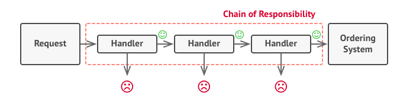
Como foi utilizado no projeto
A partir da existência de um sistema de autênticação e login, foi possível limitar a interação de um usuário não-registrado com o sistema, a partir da limitação de realizar pedidos, de maneira que os mesmos só são possíveis para os usuários que tiverem um cartão registrado em sua conta. O padrão não foi implementado em sua maneira mais completa ainda, entretanto foi utilizado de maneira indireta a partir do sistema de autenticação.
Objetivo & problema sanado
A implementação não foi possível de ser realizada, embora esteja nos planos realizar a codificação completa da mesma. Pode-se notar que o objetivo principal do padrão foi atingido, a partir do restringimento da realização do pedido por parte de um usuário não cadastrado, porém a implementação não pôde ser realizada em sua completude pelo fato da mesma necessitar de uma quantidade considerável de componentes realizando a mesma ou parecidas atividades/funções.
Observer
Observador é um padrão de design comportamental que permite definir um mecanismo de inscrição para notificar vários objetos sobre quaisquer eventos que ocorram no objeto que estão observando.
Como foi utilizado no projeto
The Django way! O Django implementa signals, o que ajuda a permitir que aplicativos dissociados sejam notificados quando ações ocorrem em outro local do framework ou em outro serviço no nosso caso. Em poucas palavras, os sinais permitem que certos remetentes notifiquem um conjunto de receptores de que alguma ação ocorreu. Eles são especialmente úteis quando muitas partes do código podem estar interessados nos mesmos eventos.

Objetivo & problema sanado
Ao utilizarmos os signals, podemos fazer um sistema de subscrição de e-mails para que os usuários interessados em receber novidades possam ser notificados via e-mail. Somente irão receber as mensagens os usuários que vonluntariamente se cadastrarem no sistema de subscrição.
Strategy
O Strategy é um padrão de projeto comportamental onde permite introduzir um família de classes para variações de algoritmo, ou seja, permitir realiza a mesma função de maneira diferentes.
Como foi utilizado no projeto
O Padrão tem como plano a utilização de diferentes classes para diferentes comportamentos dentro do código. O intuito é que se utilize de uma classe Pai, para servir de base para construção das classes filhas. Nesse caso, foi pensado a implementação dentro do serviço de pagamentos do QRComer. A inteção era que as classes filhas descrevessem diferentes formas de pagamento utilizando a interface da classe pai. As classes filhas, seriam uma de pagamento por Boleto e outra de pagamento por Cartão de Crédito.
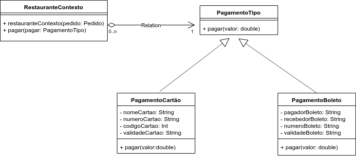
Objetivo & problema sanado
A implementação não deu certo, por conta do objetivo do produto. O QRComer, leva em conta que o usuário pague por imediato a sua refeição, o que inviabilizaria a implementação de um tipo de pagamento como o de Boleto, onde o usuário só conseguiria receber a sua refeição após a confirmação desse pagamento, que normalmente demora bastante.
Template Method
Template Method é um padrão de design comportamental que define o "esqueleto" de um algoritmo na superclasse, mas permite que as subclasses substituam etapas específicas do algoritmo sem alterar sua estrutura [3].
Como foi utilizado no projeto
O padrão foi selecionado para auxiliar no aproveitamento de linhas de código e no tratamento semelhante de dados nas classes de views no serviço de restaurante. O template pode ser reaproveitado quando e o que for necessário. Ele permite a delimitação de passos nos tratamentos das requisições do serviço: a ordem em que os passos serão executados e de que forma eles serão executados, a depender da condição.
Abaixo há algumas imagens da implementação do Template Method usado nas views do serviço de restaurante.
Os códigos na íntegra, podem ser visualizados nos seguintes links: Views e Image Views
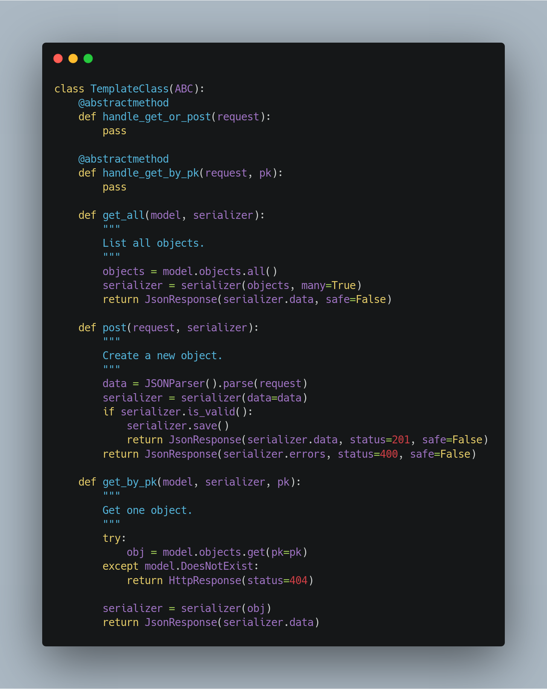
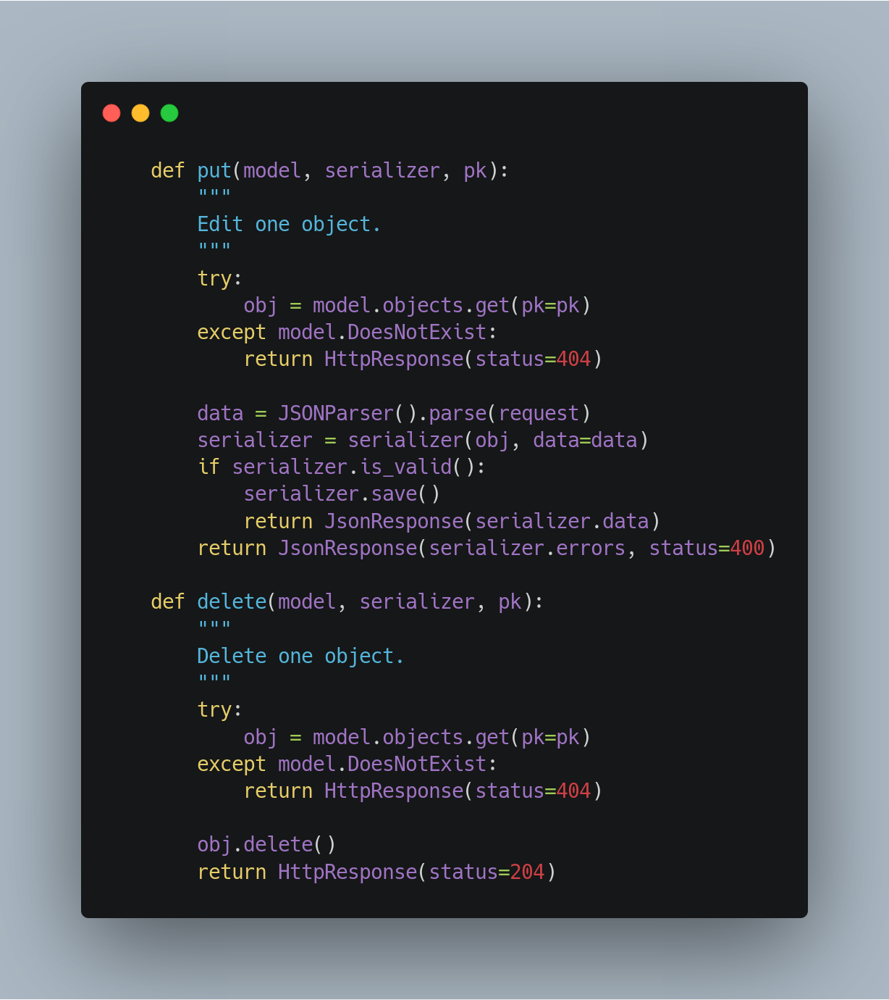
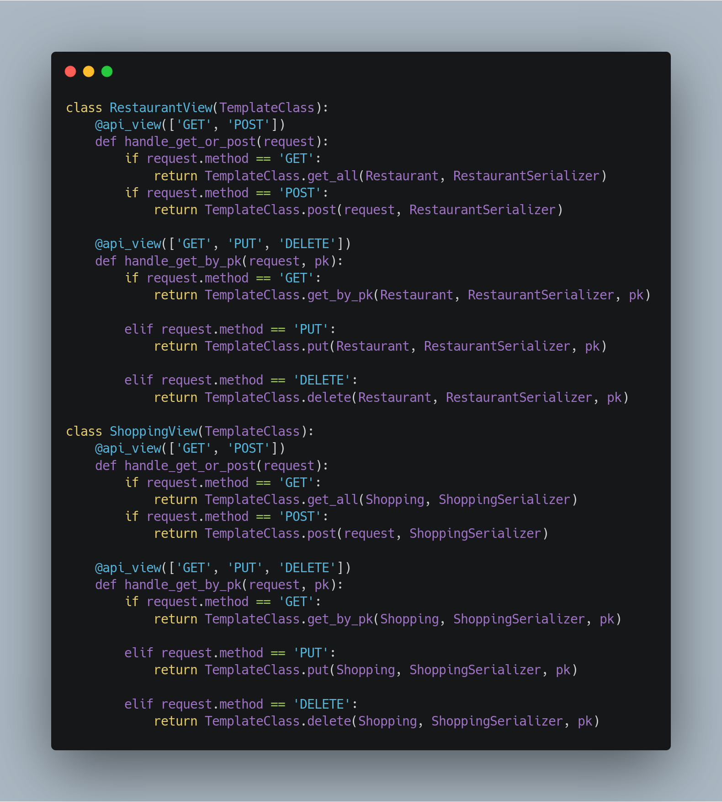
Objetivo & problema sanado
O principal problema observado no código implementado foi a repetição de diversas linhas de código. Com o uso do padrão, foi possível reduzir esse fator e assim, permitir uma melhor legibilidade do código em questão e evitar divergências entre tratamento de requisições, já que agora os tratamentos para todas as requisições seguem um template de passos.
Command
O padrão de projeto comportamental Command é um padrão focado na transformação de um request em um objeto por si só, podendo facilitar a reutilização de funções sem a duplicação de código, além de limpar um determinado arquivo ao desacoplar as funções existentes num componente.
Como foi utilizado no projeto
O padrão Command foi utilizado a partir da criação do arquivo Context.js, o qual tem como único objetivo importar e exportar todas as funções que sofreram alterações do padrão Command.
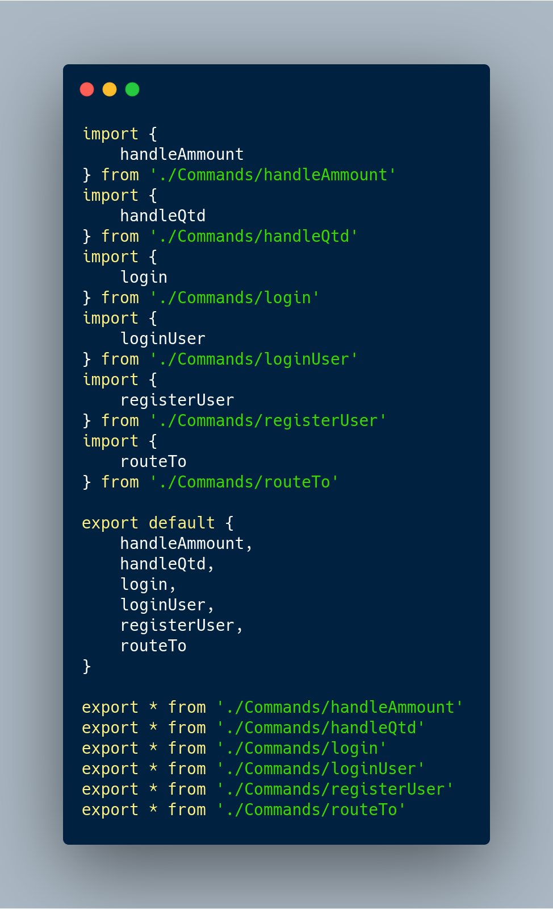
O código na íntegra pode de visualizado aqui
As funções importadas no Context.js se encontram separadas em arquivos JavaScript's, funcionais.
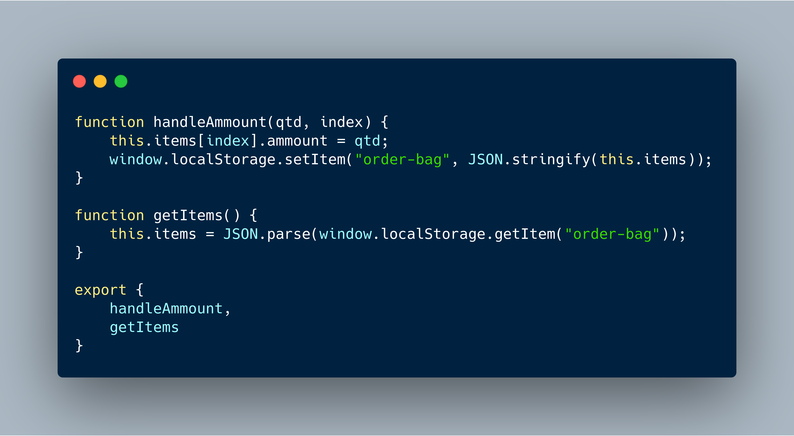
O código na íntegra pode de visualizado aqui
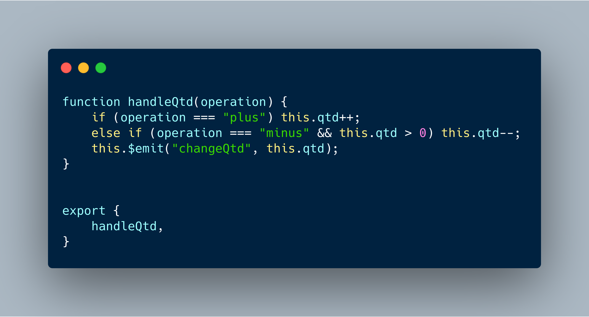
O código na íntegra pode de visualizado aqui
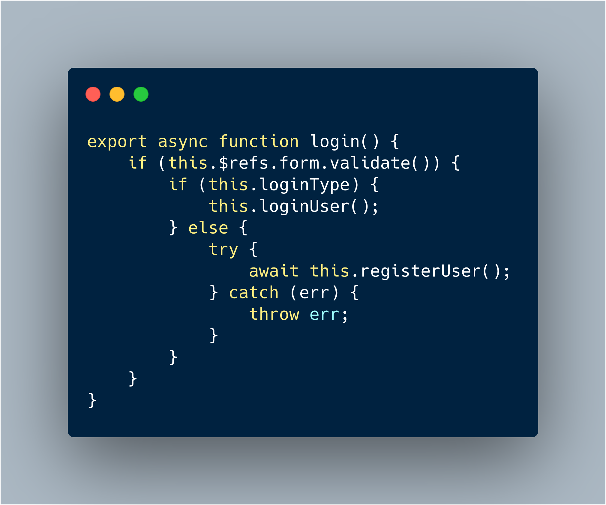
O código na íntegra pode de visualizado aqui
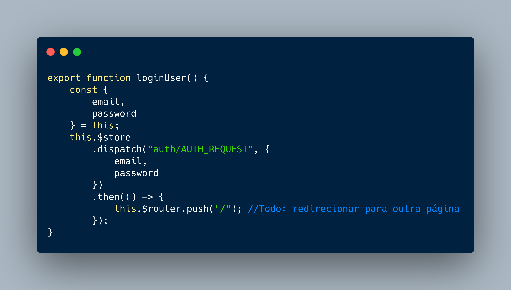
O código na íntegra pode ser visualizado aqui
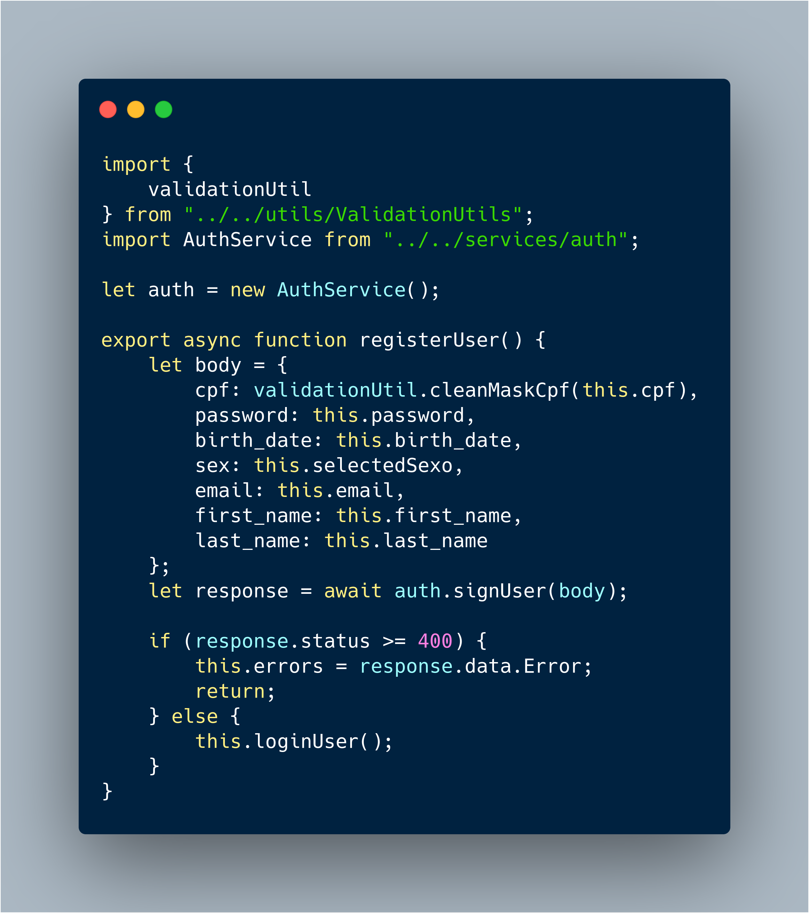
O código na íntegra pode ser visualizado aqui
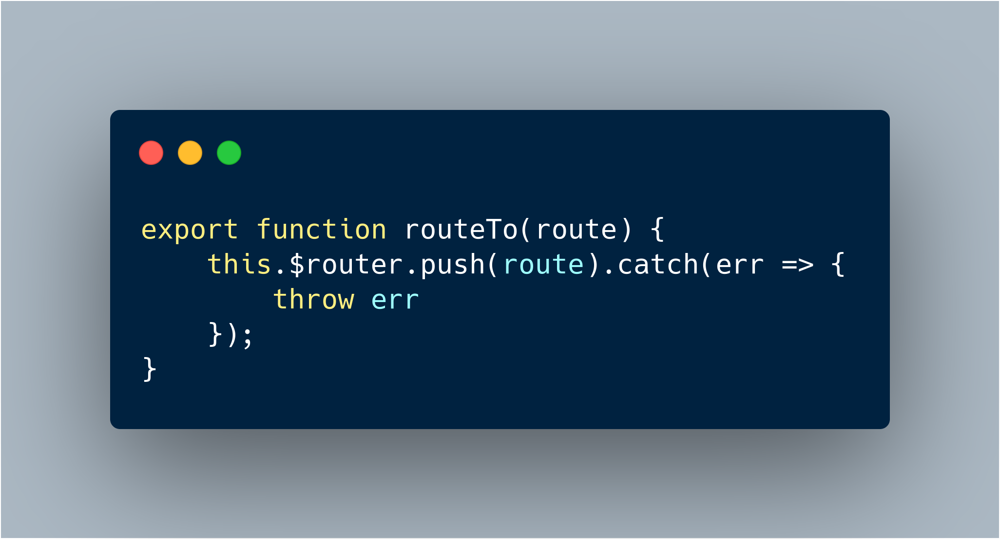
O código na íntegra pode ser visualizado aqui
A partir disso, nos arquivos .vue que receberiam as funções definidas no Context.js, o único arquivo poderia ser importado e as funções declaradas e utilizadas, sem a necessidade de passar qualquer parâmetro ou valor, como mostrado no exemplo abaixo, no arquivo Vue de autenticação de usuário.
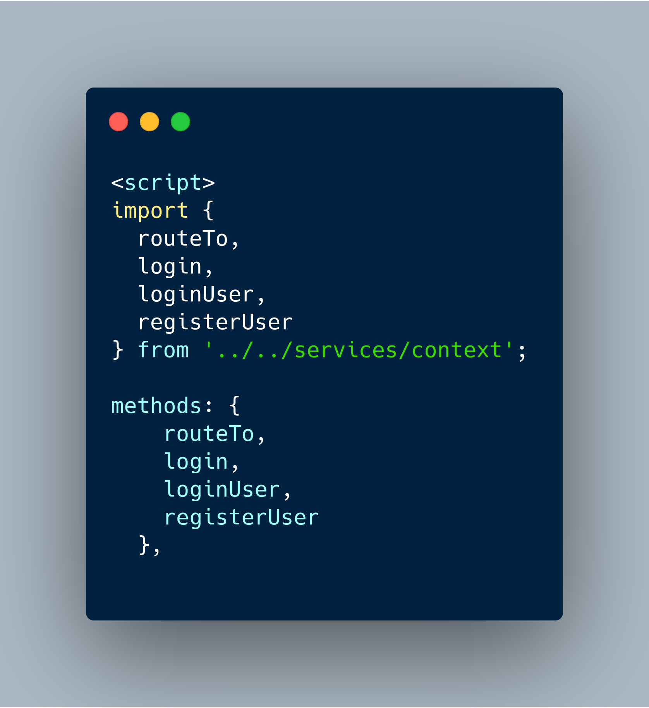
O código na íntegra pode ser visualizado aqui
Objetivos e problemas sanados
O objetivo da utilização do padrão Command, a partir do desacoplamento de funções, permite a reutilização da mesma função em uma quantidade de botões ou componentes clicáveis, sem a necessidade de duplicação de código, o que permitiu a diminuição da complexidade dos componentes e páginas criadas para o projeto. Além disso, o Command também permite que se diminua as chances de sobrescrição ou confusão na chamada de funções, devido ao código duplicado.
Referências
[1] https://docs.djangoproject.com/en/2.2/topics/signals/
[2] Erich Gamma, Richard Helm, Ralph Johnson, John Vlissides (1994). Design Patterns: Elements of Reusable Object-Oriented Software
[3] https://refactoring.guru/design-patterns/template-method